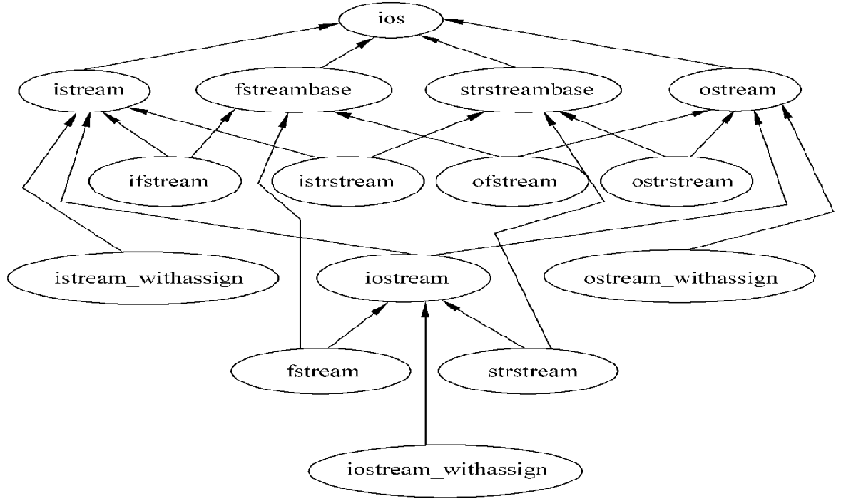
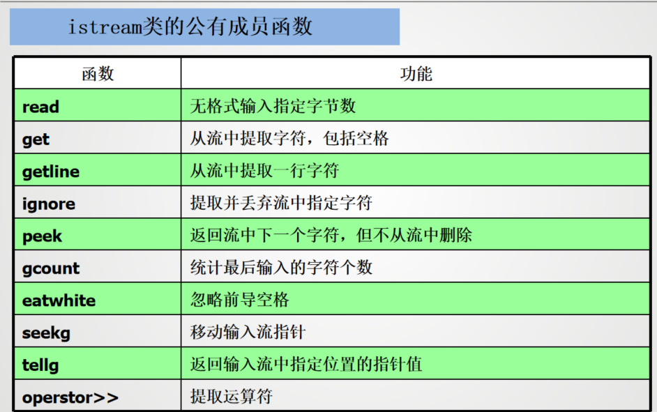

文件操作和输入输出流¶
C++的输入输出¶
C++的输入输出流是指由若干字节组成的字节序列，按顺序从一个对象传送到另一个对象。输入时，程序从输入流中抽取字节；输出时，程序将字节插入到输出流中
对于面向文本的程序，每个字节代表一个字符。
读操作在流数据抽象中被称为（从流中）提取，写操作被称为（向流中）插入。
I/O流类库提供对象之间的数据交互服务 - 输出流：表示数据从内存传送到外部设备 - 输入流：表示数据从外部设备传送到内存缓冲区变量中 - 流类库预定义了多种流对象，连接到不同的设备 - 程序员可以定义所需的流对象 - 流类对象可以建立和删除，可以从流中获取数据和向流添加数据
常用的流类继承关系：
ios
├── istream -----------|
│ ├── ifstream |____iostream----fstream
│ └── istringstream |
├── ostream------------|
│ ├── ofstream
│ └── ostringstream

cin对象管理标准输入流，默认与标准输入设备（通常为键盘）相连；cout对象管理标准输出流，默认与标准输出设备（通常为显示器）相连。除此之外，还有cerr、clog、wcin、wcout、wcerr和wclog。
插入运算符<<和提取运算符>>是C++流类的成员函数。它们分别用于向输出流插入数据和从输入流提取数据。插入运算符的左操作数是输出流对象，右操作数是要插入的数据；提取运算符的左操作数是输入流对象，右操作数是要提取的数据。
iostream类库中不同的类的声明被放在不同的头文件中。iostream类库的头文件有：
- iostream：定义了istream、ostream和iostream类，包含了对输入输出流的基本操作
- fstream：定义了ifstream、ofstream和fstream类，包含了对文件流的基本操作
- strstream：定义了istringstream、ostringstream和stringstream类，包含了对字符串流的基本操作
- stdiostream: 用于混合使用C和C++的输入输出流
- iomanip：定义了格式化输入输出流的类和函数
输入输出流分类¶
- 标准流：对系统指定的标准设备的I/O操作
- 文件流：以外存中的文件为对象进行输入和输出；
以文件为对象的输入输出，包括从磁盘文件输入数据，
或将数据输出到磁盘文件； - 字符串流：对内存中指定空间进行输入和输出； 通常指定一个字符数组作为存储空间；
标准输入流¶
使用cin进行输入¶
C++提供了实用的输入功能，通过键盘产生输入的内容，从而形成字节流。cin对象可以将输入字节流中的信息存储到相应的内存单元。通常，可以这样使用cin:
>>是流读取运算符，它重载右移位运算符>>，用于从输入流中提取数据。variable是一个变量，表示要存储输入数据的内存单元。cin对象会将输入的字节流转换为相应的数据类型，并存储到变量中。
左边的cin是一个输入流对象，右边的variable是一个变量，表示要存储输入数据的内存单元。>>是流读取运算符，它重载了右移位运算符，用于从输入流中提取数据。cin对象会将输入的字节流转换为相应的数据类型，并存储到变量中。
流提取符从流中提取数据时通常跳过输入流中的空格、tab键、换行符等空白字符。
输入运算符>>也支持级联输入。在默认情况下，运算符>>跳过空格，读入后面与变量类型相应的值。因此给一组变量输入值时，用空格或换行将输入的数值间隔开。
当输入字符串(char* 类型)时，输入运算符>>会跳过空格，读入后面的非空格符，直到遇到另外一个空格结束，并在字符串末尾自动放置字符‘\0’作为结束标志，例如
str中只存储"Hell"。如果要输入带空格的字符串，可以使用getline()函数。
数据输入时，不仅检查数据间的空格，还做类型检查，自动匹配数据类型。
如果输入12.34 34.56，则i的值为12，f的值为34.56。如果输入12.34 34.56abc，则会报错，提示类型不匹配。

常用istream成员函数
- int istream::get():
如果输入流中包括附加的数据，函数取得并返回下一个字符，否则返回EOF
- istream istream::get(char& c):
如果输入流包括附加的数据，函数取得并将下一个字符分配给c；否则就是没有定义对c的作用。返回一个对this（调用对象）的引用。
- istream istream::get(char s[], int n, char delim = '\n'):
从输入流获取字符并将它们分配给s直到下面的一个条件发生：取得n-1个字符，没有输入字符了，或者下一个接收的字符的值为delim。
- istream istream::getline(char s[], int n, char delim = '\n'):
从输入流获取字符并将它们分配给s直到下面的一个条件发生：取得n-1个字符，没有输入字符了，或者下一个接收的字符的值为delim。
- int istream::peek():
返回下一个字符，但不从输入流中删除它。返回EOF表示没有更多的字符。
- istream& istream::unget(char c):
将字符c放回输入流中,它将是下一个要接收的字符。返回一个对this（调用对象）的引用。
- bool istream::eof():
如果输入流到达文件的末尾，返回true，否则返回false。
其他istream 类方法
=== get() 方法
istream类中的get()方法提供不跳过空格的单字符输入功能
使用方法：
istream::get(char * s, int n),第一个参数用于放置字符串的内存单元的地址，第二个参数为读取的最大字符数（最后一位存放\0,最多读n-1位）
- 三个参数:istream::get(char * s, int n, char delim),第三个参数为分隔符，读取到分隔符时停止,只有两个参数的get函数将换行符用作分界符
=== getline() 方法
读取整行输入
输入流对象.getline(字符数组, 字符个数)，但是只能读字符数-1个字符
getline()重载方法同样也有三个参数的方法,三个参数的作用和上面get()方法类似，其原型如下
=== read() 方法
读取指定字节数的字符
read()方法不会在输入后加上空值字符，因此不能将输入转换为字符串，该方法的返回类型为istream&，可以进行级联输入
标准输出流¶
使用cout进行输出¶
cout是输出流类ostream的对象，输出结果流向标准的输出设备显示器。在C++中，流输出使用插入运算符<<(重载左移位运算符)完成输出，使之能够识别C++中所有的基本类型。插入运算符<<左边的操作数是ostream类的一个对象(如cout)，右边可以是C++的合法表达式。
ostream 类的对象(console output)通常连向显示器，可以重定向到文件或其他设备。cout对象的输出格式是文本格式，输出时自动转换为字符流。
cout流在内存中对应开辟了一个缓冲区
C++用指向字符串存储位置的指针来表示字符串。指针的形式可以是char数组名、显式的char指针或用引号括起的字符串。C++还允许输出项为显式对象的地址。默认情况下，地址以十六进制的形式显示。但对于其他类型的指针，C++可以使用void *来强制转换输出。
其他ostream类方法：
- put(): 无格式，插入一个字节
- write(): 无格式，插入n个字节
- flush(): 刷新输出流
- seekp(): 移动输出流指针
- tellp(): 返回输出流指针位置
ostream& ostream::put(char c):将字符c插入到输出流中，返回一个对*this（调用对象）的引用。
ostream& ostream::write(const char* s, int n):将n个字符插入到输出流中，空字符也是有效的，返回一个对*this（调用对象）的引用。s是一个指向字符数组的指针，表示要插入的字符序列。
ostream& ostream::flush():刷新输出流，强制任何没有完成的操作符插入完成，返回一个对*this（调用对象）的引用。
其他ostream 类方法
=== put() 方法
put()方法用于输出一个字符，返回值为ostream对象的引用
write() 方法
write()方法用于输出指定字节数的字符，返回值为ostream对象的引用
其他ostream 类方法¶
put() 方法¶
ostream & put(char c)
可以使用类方法来调用：
由于该函数返回ostream对象的引用，因此可以进行级联输出成员函数put不仅可以用cout对象调用,也可以用ostream类的对象调用
write() 方法¶
ostream & write(const char * s, streamsize n)
write()方法不会在遇到空字符时自动停止，而会按照指定数量输出字符，即使超出了字符串的长度也不会报错
格式化控制¶
插入和提取运算符与预先定义的操作符一起工作，用来控制输入和输出格式。
- 输出宽度：为了调整输出的宽度，可以使用
setw()函数。该函数定义在iomanip头文件中，返回一个流操纵符对象。它的参数是一个整数，表示输出的宽度。setw()函数的返回值是一个流操纵符对象，可以与插入运算符<<结合使用。 - 对齐方式：输出流默认的对齐方式是右对齐。可以使用
setiosflags()函数设置对齐方式。该函数的参数是一个整数，表示对齐方式。可以使用ios::left、ios::right和ios::internal来设置左对齐、右对齐和内部对齐。可以使用resetiosflags()函数重置对齐方式。 - 精度：使用
setprecision()函数设置输出的精度。该函数的参数是一个整数，表示小数点后保留的位数。可以使用fixed和scientific来设置定点格式和科学计数法格式。 - 进制：可以使用
hex、dec和oct来设置输出的进制格式。可以使用setbase()函数设置进制格式。该函数的参数是一个整数，表示进制格式。可以使用resetiosflags()函数重置进制格式。